Kurayoshi, Tottori: things to do, food and stays
Kurayoshi · Tottori
Kurayoshi
Highlighted on the Tottori map.

Stay
風の 倉吉
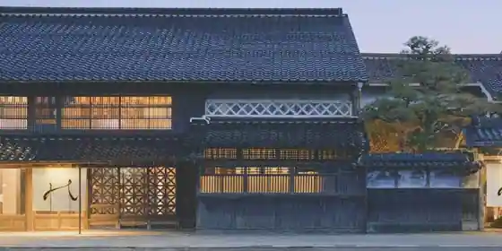
Kaze No Kurayoshi
倉吉シティホテル
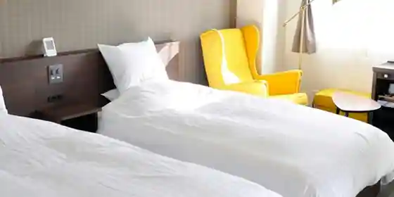
Kurayoshi City Hotel
Hotel in Yamane, Kurayoshi with a large communal bath.
ホテルルートイン倉吉駅前
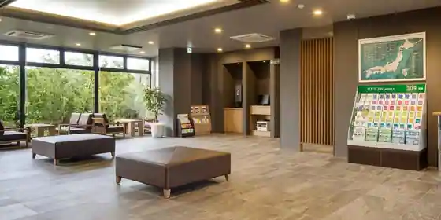
Hotel Route Inn Kurayoshi Ekimae
Hotel at Betsukomyosekijinko Onsen in Kami, Kurayoshi with a large communal bath.
わんにゃんリゾートKURAYOSHI別邸葵町・別邸新町
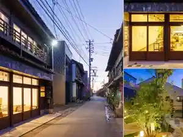
Wannyan Resort KURAYOSHI Bettei Aoi Machi Bettei Shinmachi
Resort hotel in Sakai, Kurayoshi with pet-friendly rooms.
ゲストハウスｔｏｃｏ．ｔｏｃｏ
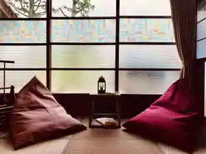
Guesthouse toco. toco
Guesthouse in Shin, Kurayoshi with a renovated traditional house.
ビジネスインたけのや
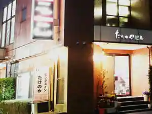
Business Inn Takenoya
Inn in Meiji, Kurayoshi with business travelers.
松風荘旅館
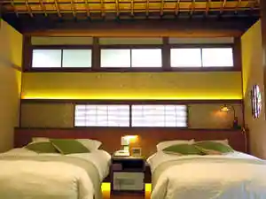
Matsukaze So Ryokan
わんにゃんリゾートＫＵＲＡＹＯＳＨＩ別邸余戸谷
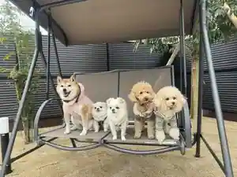
Wannyan Resort KURAYOSHI Bettei Yo Toya
Resort hotel in Yotoya, Kurayoshi with pet-friendly rooms.
倉吉タウンホテル
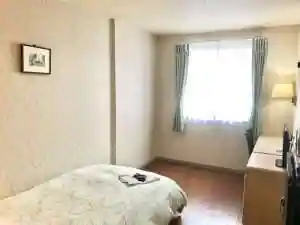
Kurayoshi Town Hotel
ビジネスホテル斉木
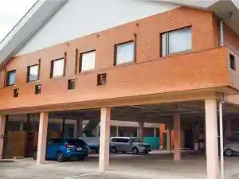
Business Hotel Saiki
Hotel in Iki, Kurayoshi with parking and business travelers.
ホテルアーク２１
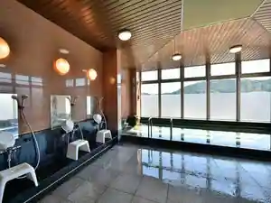
Hotel Aku 21
Hotel in Kami, Kurayoshi with a large communal bath; 5-minute walk from Jrkurayoshi Station.
ビジネスイン諏訪部
Business Inn Suwabe
Inn in Kami, Kurayoshi with business travelers; 5-minute walk from Jrkurayoshi Station.
Dining
いのよし
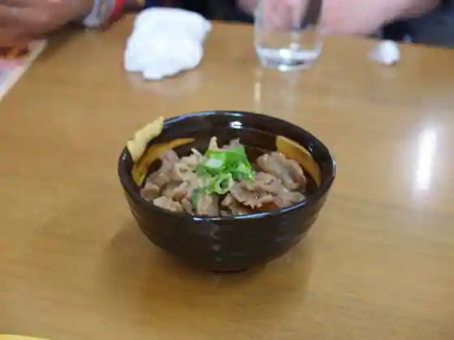
Inoyoshi
石谷精華堂
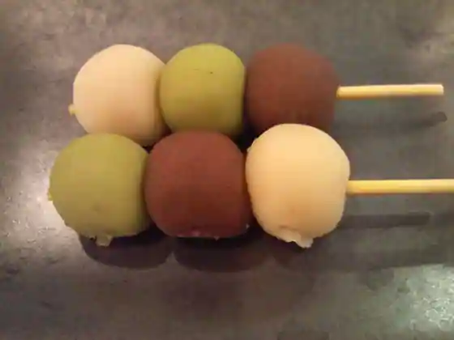
Ishigaya Seika Do
米澤たい焼店
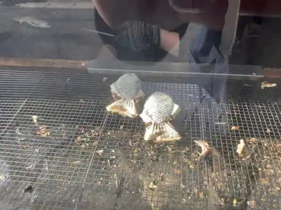
Yonezawa Tai Yaki
八兵衛
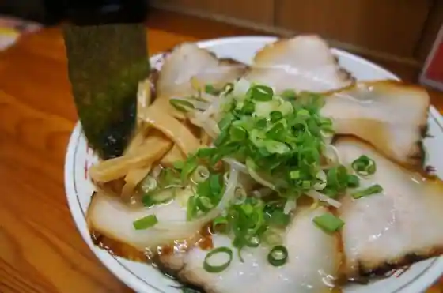
Hachibe
町屋 清水庵
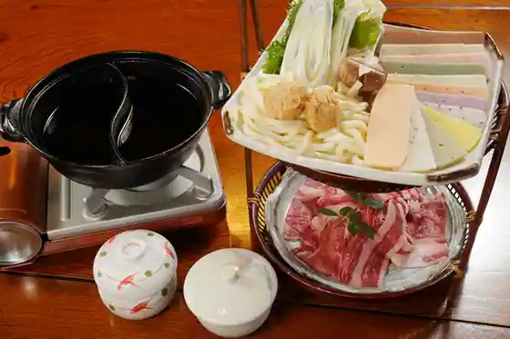
Machiya Shimizu Iori
蕎麦酒房 つなぎや
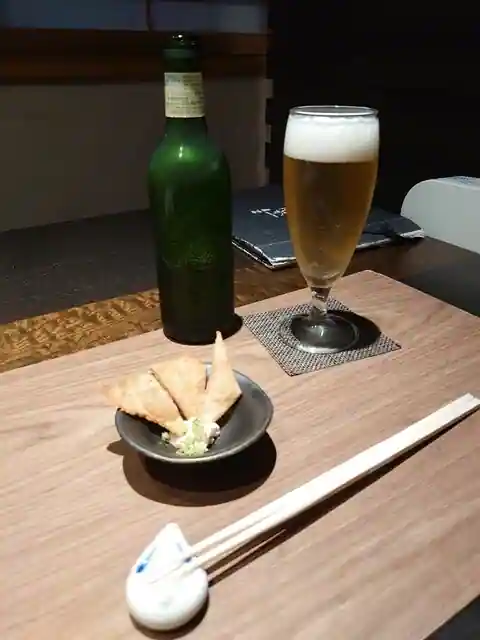
Soba Sake Bo Tsunagiya
回転すし北海道 河北店

Kaiten Sushi Hokkaido Kahoku
白壁倶楽部
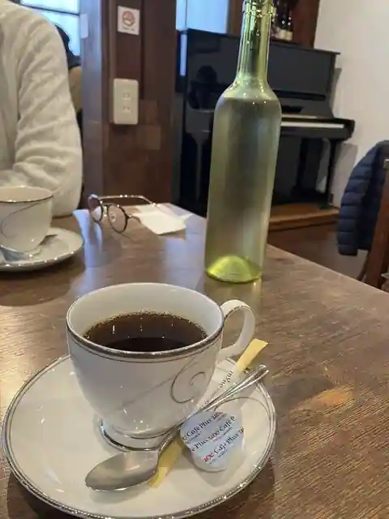
Shirakabe Kurabu
拉麺 やまねこ
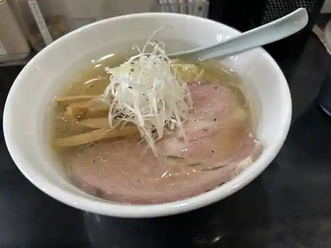
Ramen Yamaneko
土蔵蕎麦
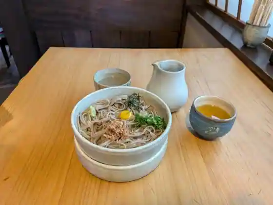
Dozo Soba
居酒屋 武双
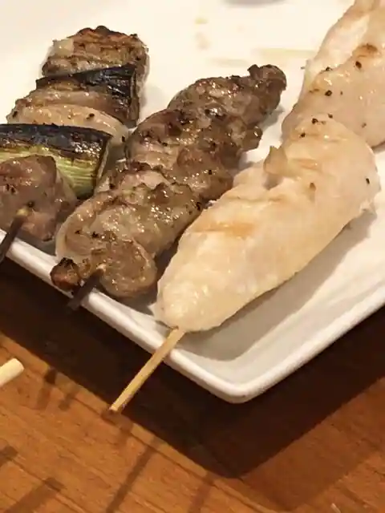
Izakaya Takeshi So
スウィートランドTAKARA
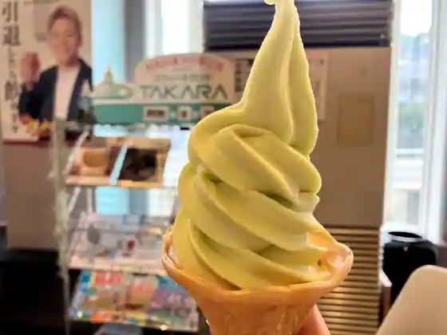
Suitorando TAKARA
味処 進
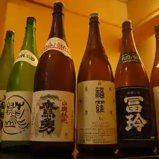
Ajidokoro Susumu
フルーツパーラー
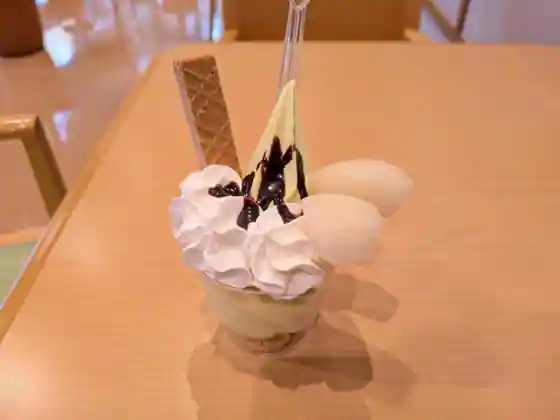
Furutsupara
赤瓦五号館 久楽
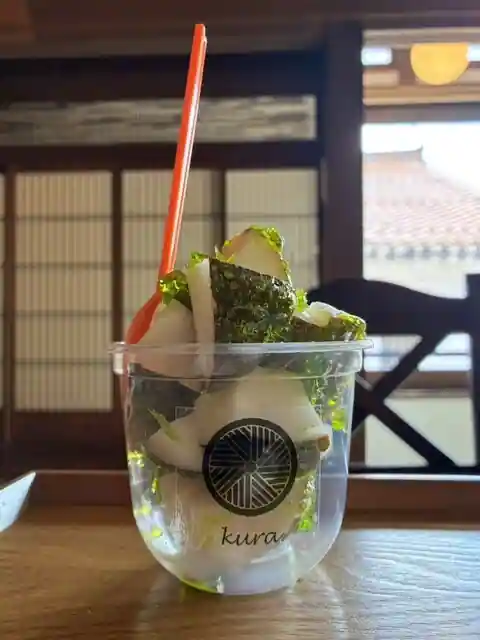
Akagawara Go Gokan Kuraku
香味徳
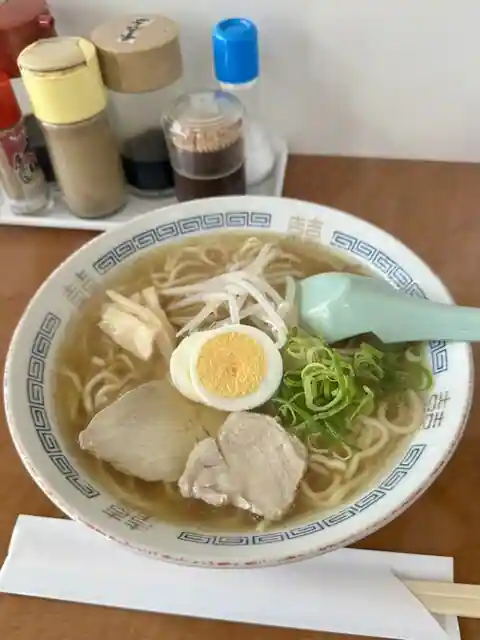
Komi Toku
チロリン村
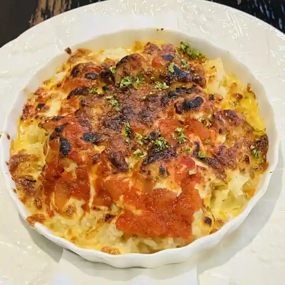
Chirorin Mura
てけてけ
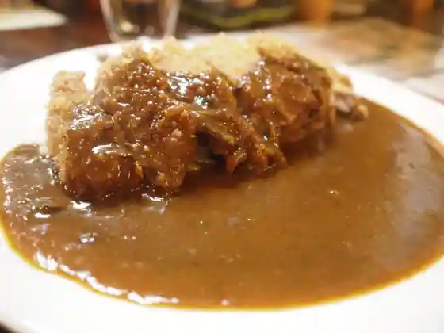
Teketeke
渋や
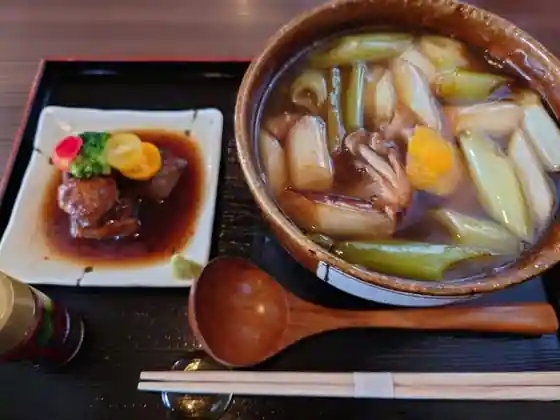
Shibu Ya
ごっつおらーめん 倉吉本店
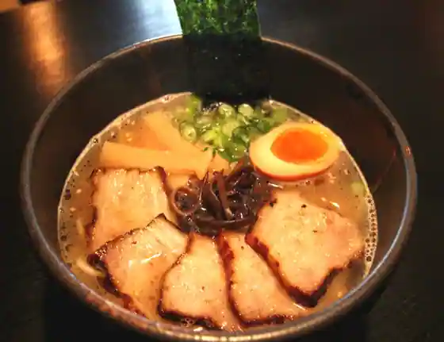
Gottsuo Ramen Kurayoshi Hon
麺屋 エーハチ
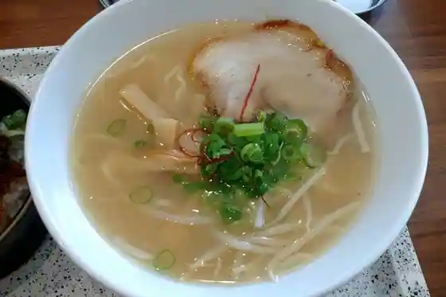
Men Ya Ehachi
うどんちよ志 倉吉店
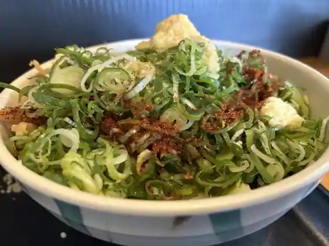
Udonchiyo Kokorozashi Kurayoshi
cafe SOURCE MID 倉吉店
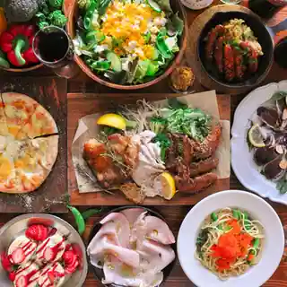
cafe SOURCE MID Kurayoshi
打吹庵
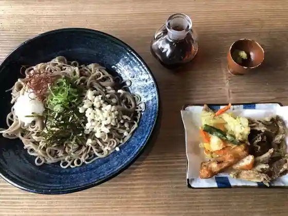
Utsubuki Iori
Sights
Kurayoshi Shirakabe Dozo Gun
Sekigane Onsen

Kurayoshi Park Sukuea

Kurayoshi Eki Yoko Plaza

Utsubuki Park

Suiito Land TAKARA
Seiryu Yu YOU Mura
Sekigane Wasabi Ta
Tottori Nijusseiki Nashi Memorial Museum (Nashikko Kan)
Fukutomi Shrine
Kamo Shrine
Oyama Ike
Akagawara
Gokuraku Tera
Todai Yama Bridge
Kyukokutetsu Kurayoshi Sen Haisen'ato Namikimichi
Fuku Seki Shrine
Yamamori Onsen Campground
Kamei Park
Kurayoshi Yodo Ya
Man Sei Tera
Nashi Sofuto
Ege Tanigawa no Sakura Namiki
Nami Nami Ki Shrine
Otake In
Hase Tera
Dai Hasu Tera
Roadside Station Inu Kyo
Sekigane Onsen no Ashiyu
Ue Kami Yaki Togei Kyoshitsu
Kanu Boto Experience
Kurayoshi Kasuri Demachi Aruki
Hakota Ningyo no Kao Egaki
Kurayoshi Shirakabe Dozo Gun Sansaku
Kurayoshi Kasuri
Sekigane Yu Inochi Kan
Machiya Shimizu Iori
Kurayoshi Museum Folk Museum
Kyukokutetsu Kurayoshi Sen Haisen'ato Torekkingu
COUP!La Café (Kurakafe)
Toyoda Ie House
Gensui
Yashio
Kore Kun
Yukata Demachi Aruki
Tottori Prefectural Art Museum
Enkeigekijo Kurayoshi Figyua Museum
Barukosu
Kurayoshi Yakusho